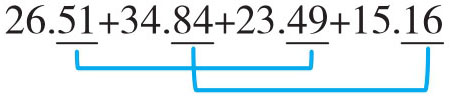
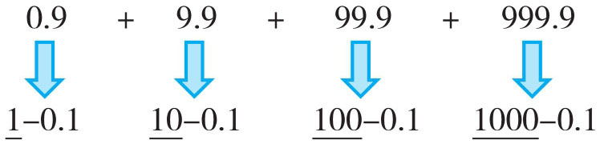
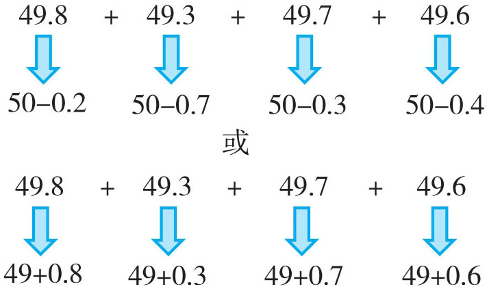
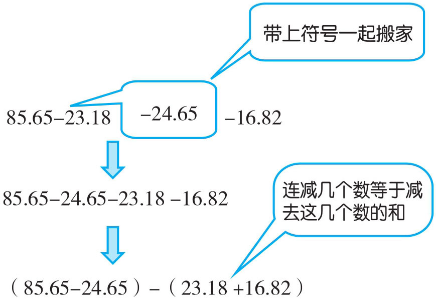
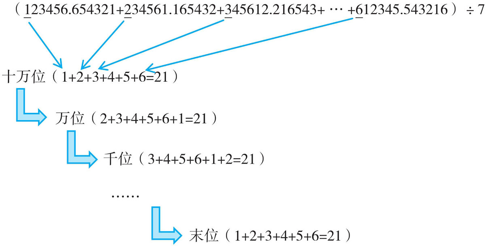

例1 26.51+34.84+23.49+15.16
观察发现26.51的小数部分与23.49的小数部分可以凑整，34.84的小数部分与15.16的小数部分可以凑整，运用加法的交换律和结合律可使本题计算简便。

26.51+34.84+23.49+15.16=(26.51+23.49)+(34.84+15.16)=50+50=100
例2 0.9+9.9+99.9+999.9
根据估算经验发现0.9接近1，9.9接近10，后两个数分别接近100与1000，计算这种题目时，我们将它们转化成1、10、100、1000再计算，把多加的数再减掉。

0.9+9.9+99.9+999.9=1+10+100+1000-0.1×4=1111-0.4=1110.6
例3 49.8+49.3+49.7+49.6
仔细观察每个数，发现这四个数都非常接近整数50，所以我们把50定为基准数，那么这四个数与基准数分别相差0.2、0.7、0.3、0.4，计算出4个50的和再减去相差数。同理，也可定49为基准数，最后加上相差数。

方法一：49.8+49.3+49.7+49.6=50×4-(0.2+0.7+0.3+0.4)=200-1.6=198.4
方法二：49.8+49.3+49.7+49.6=49×4+(0.8+0.3+0.7+0.6)=196+2.4=198.4
例4 85.65-23.18-24.65-16.82
连减的算式我们在巧算时一般是将后面的数加起来，这里如果将后面的三个数加起来不凑整，再观察可以发现85.65与24.65的尾数相同，尾数相同直接减，23.18与16.82的尾数可凑整。

85.65-23.18-24.65-16.82=(85.65-24.65)-(23.18+16.82)=61-40=21
例5 (123456.654321+234561.165432+345612.216543+…+612345.543216)÷7
括号中的数都是以小数点为界点的“对称数”，并且从第一个数开始按规律循环推移，如果把六个数全部加起来，一定会很麻烦。通过有意识地观察，我们发现这六个数最高位（十万位）上的数字分别是1、2、3、4、5、6，万位上的数字是2、3、4、5、6、1，千位上的数字是3、4、5、6、1、2，……，一直到最后一位都是1~6这六个数字，而1+2+3+4+5+6=21，也即是每一位上的数字之和都是“21”，因为21÷7=3，所以与7相除后每一位上的数字都是3。

(123456.654321+234561.165432+345612.216543+…+612345.543216)÷7=333333.333333
1．23.45+31.08+22.92+22.55
2．43.25-21.26-12.74-3.25
3．29.9+29.8+29.7+29.6
4．(4567+5674+6745+7456)÷11
5．35.12+27.38-17.32-28.64-21.36+24.88-12.68
6．1.999+19.99+199.9+1999
7．59.97+39.9+99.95+299.8+19.98
8．514.26+614.26+714.26+814.26+914.26
9．(123456789.987654321+234567891.198765432+345678912.219876543+…+9123454678.876543219)÷5